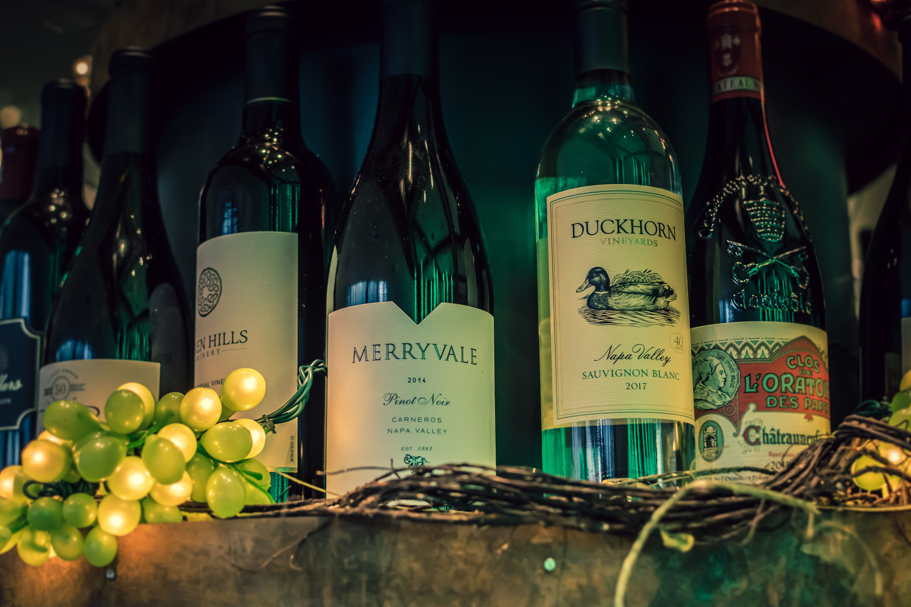

California, USA
Bold Cabernet & Rich Oak Chardonnay
Napa Valley
Sun-soaked valley floors framed by volcanic gravel soils produce intense, full-bodied reds with velvety tannins and deep dark berry notes.
- Climate: Mediterranean warm
- Soil: Volcanic gravel & loam
- Grape Variety: Cabernet Sauvignon
- Technique: French oak aging